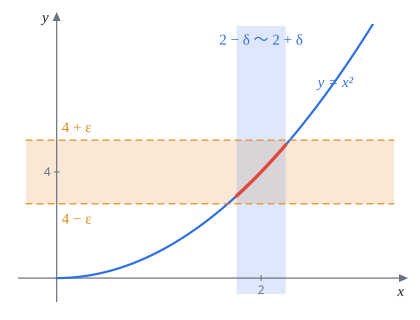
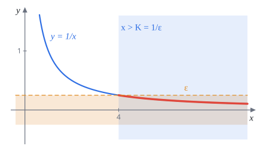
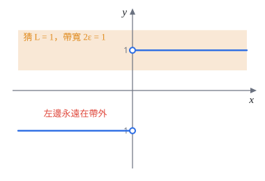

Week 16-1 極限的嚴格定義 延伸
AP Calculus I（115 學年）Lecture Note 16-1 教學與題解
講義筆誤p.131（§16.2 第一例）：最後一行 $2|x-2|\lt2\delta$ 應為 $2|x-1|\lt2\delta$。見題 2。
講義筆誤p.136（§16.5 Step 0）：「there exists $M_1$」應為 $N_1$。見題 14。
講義筆誤p.139 乘積的證明：題目允許 $L_2=0$，但取 $\varepsilon_2=\frac{\varepsilon}{2L_2}$ 在 $L_2=0$ 時分母為零。改取 $\varepsilon_2=\frac{\varepsilon}{2(L_2+1)}$ 就對了。見題 18。
講義筆誤p.139 最後一例 (a)：「there exists $\delta_1$ such that if $0\lt|x-a|\lt\delta_2$」前後的 $\delta$ 下標不一致，應同為 $\delta_1$。見題 19。
講義筆誤p.140 極限唯一性的證明：$0\lt|f(x)-L|\lt\frac\varepsilon2$ 前面的「$0\lt$」不該有，$f(x)$ 可以剛好等於 $L$。見題 21。
講義筆誤p.140 最後一個 Exercise：應為「$\lim_{x\to a^+}f(x)=L$ 且 $\lim_{x\to a^-}f(x)=L$」，講義兩個都寫成 $a^+$。見題 25。
講義筆誤p.142 定理 16.7.2 證明 ($\Leftarrow$)：$|f(x_n)-f(x_0)|\ge\varepsilon$ 應為 $\ge\varepsilon_0$。見題 30。
前面算極限都靠「越來越靠近」這種直覺。直覺夠用來算答案，但它不是數學定義：「靠近」到底要多近？這週把這句話翻成精確的語言，也就是 $\varepsilon$-$\delta$。整份講義都是 (*) 內容，考試不一定考，但讀懂之後你會知道前面所有極限定理為什麼對。
整週只有一個核心句型，先把它背起來：
核心句型對任意給定的誤差 $\varepsilon\gt0$，找得到一個範圍 $\delta\gt0$（可以依賴 $\varepsilon$），使得「$x$ 落在範圍內」就保證「$f(x)$ 落在誤差內」。
證明就是一場攻防：對手出 $\varepsilon$，你回一個 $\delta$，而且你的回應方式要對所有 $\varepsilon$ 都管用。
16.1 動機：完成一句話
高中題「最小的 $n$ 使 $2^n\ge1000$」其實已經有嚴格定義的味道。你找到的答案是一個條件，它讓一句 if-then 成立：「若 $n\ge$ 某數，則 $2^n\ge1000$」。
把 1000 換成任意的 $M\gt0$，你一樣能寫出對應的條件 $n\ge\left[\frac{\ln M}{\ln2}\right]+1$。「對任意挑戰 $M$，找出讓 if-then 成立的條件」，這就是後面所有定義的骨架。
題 1求最小的自然數 $n$，使得 $2^n\ge1000$。
兩邊取 $\log_{10}$：$n\log_{10}2\ge3$，即 $n\ge\dfrac{3}{\log_{10}2}\approx\dfrac{3}{0.30103}\approx9.97$。$n$ 要是整數，所以 $n\ge\left[\dfrac{3}{\log_{10}2}\right]+1=10$。
驗算：$2^9=512\lt1000$，$2^{10}=1024\ge1000$。
推廣到任意 $M\gt0$：取 $n\ge\left[\frac{\ln M}{\ln 2}\right]+1$，則 $n\gt\frac{\ln M}{\ln2}$，所以 $2^n\gt M$。這個條件不一定是「最小」的（例如 $M=1024$ 時它給 11，但 10 就夠了），不過嚴格定義只要求找得到一個夠用的條件，不要求最佳。
$n=10$
本節練習
練習 16.1-1求最小的自然數 $n$，使得 $3^n\ge10^6$。（$\log_{10}3\approx0.4771$）
詳解
$n\log_{10}3\ge6$，$n\ge\frac{6}{0.4771}\approx12.58$，所以 $n=13$。驗算 $3^{12}=531441\lt10^6$，$3^{13}=1594323\ge10^6$。
$n=13$
練習 16.1-2對任意 $\varepsilon\gt0$，找一個（和 $\varepsilon$ 有關的）條件，使得「若 $n$ 滿足此條件，則 $\frac1{n^2}\lt\varepsilon$」。
詳解
倒推：$\frac1{n^2}\lt\varepsilon\iff n^2\gt\frac1\varepsilon\iff n\gt\frac1{\sqrt\varepsilon}$（$n$ 為正）。所以取條件 $n\ge\left[\frac1{\sqrt\varepsilon}\right]+1$，此時 $n\gt\frac1{\sqrt\varepsilon}$，就有 $\frac1{n^2}\lt\varepsilon$。
$n\ge\left[\frac1{\sqrt\varepsilon}\right]+1$（任何保證 $n\gt\frac1{\sqrt\varepsilon}$ 的條件都可以）
16.2 $\lim_{x\to a}f(x)=L$
宣稱 $\lim_{x\to a}f(x)=L$，等於承諾回答所有這種問題：$x$ 要離 $a$ 多近，才能保證 $|f(x)-L|\lt0.1$？$0.01$ 呢？$0.001$ 呢？一題一題答不完，所以要一次答完：對任意 $\varepsilon$，給出一個公式 $\delta(\varepsilon)$。
定義 16.2.1$\lim_{x\to a}f(x)=L$ 的意思是：對任意 $\varepsilon\gt0$，存在 $\delta\gt0$，使得
$$0\lt|x-a|\lt\delta\ \Longrightarrow\ |f(x)-L|\lt\varepsilon.$$
兩個細節：
- $0\lt|x-a|$ 表示 $x\ne a$。極限只管 $a$ 附近，不管 $f(a)$ 本身，甚至 $f(a)$ 可以沒定義。
- $\varepsilon$ 越小，通常 $\delta$ 也得越小，所以 $\delta$ 寫成 $\varepsilon$ 的式子。但 $\delta$ 不能含 $x$，因為 $\delta$ 是在看到 $x$ 之前就要決定的範圍。
解題套路證明 $\lim_{x\to a}f(x)=L$：
- 草稿：從目標 $|f(x)-L|$ 出發，化成「某個東西 $\times|x-a|$」。
- 如果那個東西是常數 $c$，取 $\delta=\frac\varepsilon c$。
- 如果它還含 $x$（例如 $|x+2|$），先用 $\delta_1=1$ 把 $x$ 關在 $a$ 附近，求出它的上界 $C$，再取 $\delta=\min\{1,\frac\varepsilon C\}$。
- 正式寫：「For any $\varepsilon\gt0$, take $\delta=\cdots$. If $0\lt|x-a|\lt\delta$, then $|f(x)-L|\le\cdots\lt\varepsilon$.」
題 2設 $f(x)=\begin{cases}\dfrac{2x^2-x-1}{x-1}, & x\ne1\\[2pt] 0, & x=1\end{cases}$。用定義證明 $\lim_{x\to1}f(x)=3$。$f(1)=0$ 離 3 很遠，這違反極限嗎？
$2x^2-x-1=(2x+1)(x-1)$，所以 $x\ne1$ 時 $f(x)=2x+1$。
草稿：$|f(x)-3|=|2x+1-3|=2|x-1|$。要它 $\lt\varepsilon$，只要 $|x-1|\lt\frac\varepsilon2$。
正式證明：對任意 $\varepsilon\gt0$，取 $\delta=\frac\varepsilon2$。若 $0\lt|x-1|\lt\delta$，則 $x\ne1$，所以
$$|f(x)-3|=|2x+1-3|=2|x-1|\lt2\delta=\varepsilon.$$故 $\lim_{x\to1}f(x)=3$。（講義此處把 $2|x-1|$ 誤植為 $2|x-2|$。）
至於 $f(1)=0$：定義只檢查 $0\lt|x-1|\lt\delta$ 的 $x$，$x=1$ 本身被排除，所以 $f(1)$ 是多少都不影響極限。它影響的是連續性：這個 $f$ 在 $x=1$ 不連續。
取 $\delta=\frac\varepsilon2$；不違反，極限不看 $f(1)$
題 3證明 $\lim_{x\to0}\sqrt[3]x=0$。
草稿：$|\sqrt[3]x-0|\lt\varepsilon\iff|x|\lt\varepsilon^3$（立方根是遞增函數，兩邊立方不改變大小）。
正式證明：對任意 $\varepsilon\gt0$，取 $\delta=\varepsilon^3$。若 $0\lt|x|\lt\delta=\varepsilon^3$，則 $|\sqrt[3]x|=\sqrt[3]{|x|}\lt\sqrt[3]{\varepsilon^3}=\varepsilon$。
取 $\delta=\varepsilon^3$
題 4證明 $\lim_{x\to2}x^2=4$。
草稿：$|x^2-4|=|x+2|\,|x-2|$。如果取 $\delta=\frac{\varepsilon}{|x+2|}$，$\delta$ 就含 $x$ 了，不合法。辦法是先把 $x$ 關在 2 附近，讓 $|x+2|$ 有上界。
限制 $|x-2|\lt1$，則 $1\lt x\lt3$，$3\lt x+2\lt5$，所以 $|x+2|\lt5$。這時 $|x^2-4|\lt5|x-2|$，再要求 $|x-2|\lt\frac\varepsilon5$ 即可。兩個要求同時成立，取較小者。
正式證明：對任意 $\varepsilon\gt0$，取 $\delta=\min\{1,\frac\varepsilon5\}$。若 $0\lt|x-2|\lt\delta$，則
(1) $|x-2|\lt1$，所以 $|x+2|\lt5$；(2) $|x-2|\lt\frac\varepsilon5$。於是
$$|x^2-4|=|x+2|\,|x-2|\lt5\cdot\frac\varepsilon5=\varepsilon.$$取 $\delta=\min\{1,\frac\varepsilon5\}$
為什麼先限制成 1？其實 1 只是方便，取 $\frac12$ 或 $2$ 都行，只是上界 $C$ 會跟著變。重點是先限制一個固定的範圍，讓含 $x$ 的因子被常數壓住。
題 5用定義證明：
(a) $\lim_{x\to2}x^3=8$ (b) $\lim_{x\to2}\sqrt x=\sqrt2$（提示：$|\sqrt x-\sqrt a|=\frac{|x-a|}{\sqrt x+\sqrt a}$） (c) $\lim_{x\to2}\frac1x=\frac12$
(a) $|x^3-8|=|x-2|\,|x^2+2x+4|$。限制 $|x-2|\lt1$，則 $1\lt x\lt3$，$x^2+2x+4\lt9+6+4=19$。
對任意 $\varepsilon\gt0$，取 $\delta=\min\{1,\frac{\varepsilon}{19}\}$。若 $0\lt|x-2|\lt\delta$，則 $|x^3-8|\lt19|x-2|\lt19\cdot\frac{\varepsilon}{19}=\varepsilon$。
(b) 要先保證 $x\gt0$ 才有 $\sqrt x$，所以先限制 $|x-2|\lt2$，即 $0\lt x\lt4$。此時 $\sqrt x+\sqrt2\gt\sqrt2$，
$$|\sqrt x-\sqrt2|=\frac{|x-2|}{\sqrt x+\sqrt2}\lt\frac{|x-2|}{\sqrt2}.$$對任意 $\varepsilon\gt0$，取 $\delta=\min\{2,\sqrt2\,\varepsilon\}$。若 $0\lt|x-2|\lt\delta$，則 $|\sqrt x-\sqrt2|\lt\frac{\sqrt2\,\varepsilon}{\sqrt2}=\varepsilon$。
(c) $\left|\frac1x-\frac12\right|=\frac{|x-2|}{2|x|}$。分母裡的 $x$ 要有下界，才能讓分式有上界。限制 $|x-2|\lt1$，則 $x\gt1$，$2|x|\gt2$，所以 $\left|\frac1x-\frac12\right|\lt\frac{|x-2|}{2}$。
對任意 $\varepsilon\gt0$，取 $\delta=\min\{1,2\varepsilon\}$。若 $0\lt|x-2|\lt\delta$，則 $\left|\frac1x-\frac12\right|\lt\frac{2\varepsilon}2=\varepsilon$。
(a) $\delta=\min\{1,\frac\varepsilon{19}\}$ (b) $\delta=\min\{2,\sqrt2\varepsilon\}$ (c) $\delta=\min\{1,2\varepsilon\}$
單邊極限只是把「$x$ 在 $a$ 兩側」改成一側：
定義 16.2.2、16.2.3$\lim_{x\to a^+}f(x)=L$：對任意 $\varepsilon\gt0$ 存在 $\delta\gt0$，使得 $a\lt x\lt a+\delta\Rightarrow|f(x)-L|\lt\varepsilon$。
$\lim_{x\to a^-}f(x)=L$：同上，條件改成 $a-\delta\lt x\lt a$。
本節練習
練習 16.2-1證明 $\lim_{x\to3}(4x-5)=7$。
詳解
$|(4x-5)-7|=|4x-12|=4|x-3|$。對任意 $\varepsilon\gt0$ 取 $\delta=\frac\varepsilon4$，若 $0\lt|x-3|\lt\delta$，則 $|(4x-5)-7|=4|x-3|\lt\varepsilon$。
取 $\delta=\frac\varepsilon4$
練習 16.2-2證明 $\lim_{x\to1}(x^2+x)=2$。
詳解
$|x^2+x-2|=|x-1|\,|x+2|$。限制 $|x-1|\lt1$，則 $0\lt x\lt2$，$|x+2|\lt4$。
對任意 $\varepsilon\gt0$ 取 $\delta=\min\{1,\frac\varepsilon4\}$。若 $0\lt|x-1|\lt\delta$，則 $|x^2+x-2|\lt4|x-1|\lt\varepsilon$。
取 $\delta=\min\{1,\frac\varepsilon4\}$
練習 16.2-3證明 $\lim_{x\to4}\sqrt x=2$。
詳解
限制 $|x-4|\lt4$ 保證 $x\gt0$。此時 $|\sqrt x-2|=\frac{|x-4|}{\sqrt x+2}\lt\frac{|x-4|}{2}$。
對任意 $\varepsilon\gt0$ 取 $\delta=\min\{4,2\varepsilon\}$。若 $0\lt|x-4|\lt\delta$，則 $|\sqrt x-2|\lt\frac{2\varepsilon}2=\varepsilon$。
取 $\delta=\min\{4,2\varepsilon\}$
16.3 $\lim_{x\to a}f(x)=\infty$
「趨近無限大」沒有誤差可言，挑戰變成「要 $f(x)$ 大過 $M$」：$x$ 要離 $a$ 多近，才能保證 $f(x)\gt100$？$\gt1000$？一次答完就是對任意 $M$ 給出 $\delta$。
定義 16.3.1$\lim_{x\to a}f(x)=\infty$：對任意 $M\gt0$，存在 $\delta\gt0$，使得 $0\lt|x-a|\lt\delta\Rightarrow f(x)\gt M$。
題 6證明 $\lim_{x\to0}\dfrac1{x^2}=\infty$。
草稿：$\frac1{x^2}\gt M\iff x^2\lt\frac1M\iff0\lt|x|\lt\frac1{\sqrt M}$（$x\ne0$）。
正式證明：對任意 $M\gt0$，取 $\delta=\frac1{\sqrt M}$。若 $0\lt|x|\lt\delta$，則 $0\lt x^2\lt\frac1M$，所以 $\frac1{x^2}\gt M$。
取 $\delta=\frac1{\sqrt M}$
題 7寫出下列極限的嚴格定義：
(a) $\lim_{x\to a^+}f(x)=\infty$ (b) $\lim_{x\to a^-}f(x)=\infty$ (c) $\lim_{x\to a}f(x)=-\infty$ (d) $\lim_{x\to a^+}f(x)=-\infty$ (e) $\lim_{x\to a^-}f(x)=-\infty$
規則：$a^+$ 把條件換成 $a\lt x\lt a+\delta$，$a^-$ 換成 $a-\delta\lt x\lt a$；$-\infty$ 把結論換成 $f(x)\lt-M$。以下都是「對任意 $M\gt0$，存在 $\delta\gt0$，使得……」：
(a) $a\lt x\lt a+\delta\Rightarrow f(x)\gt M$
(b) $a-\delta\lt x\lt a\Rightarrow f(x)\gt M$
(c) $0\lt|x-a|\lt\delta\Rightarrow f(x)\lt-M$
(d) $a\lt x\lt a+\delta\Rightarrow f(x)\lt-M$
(e) $a-\delta\lt x\lt a\Rightarrow f(x)\lt-M$
見上
題 8證明 $\lim_{x\to0^+}\ln x=-\infty$。
草稿：$\ln x\lt-M\iff x\lt e^{-M}$（$\ln$ 遞增）。
正式證明：對任意 $M\gt0$，取 $\delta=e^{-M}$。若 $0\lt x\lt\delta$，則 $\ln x\lt\ln e^{-M}=-M$。
取 $\delta=e^{-M}$
本節練習
練習 16.3-1證明 $\lim_{x\to1}\dfrac1{(x-1)^2}=\infty$。
詳解
$\frac1{(x-1)^2}\gt M\iff0\lt|x-1|\lt\frac1{\sqrt M}$。對任意 $M\gt0$ 取 $\delta=\frac1{\sqrt M}$，若 $0\lt|x-1|\lt\delta$，則 $(x-1)^2\lt\frac1M$，所以 $\frac1{(x-1)^2}\gt M$。
取 $\delta=\frac1{\sqrt M}$
練習 16.3-2寫出 $\lim_{x\to0^-}\frac1x=-\infty$ 的嚴格定義並證明。
詳解
定義：對任意 $M\gt0$，存在 $\delta\gt0$，使得 $-\delta\lt x\lt0\Rightarrow\frac1x\lt-M$。
取 $\delta=\frac1M$。若 $-\frac1M\lt x\lt0$，則 $0\lt-x\lt\frac1M$，取倒數得 $-\frac1x\gt M$，即 $\frac1x\lt-M$。
取 $\delta=\frac1M$
16.4 $\lim_{x\to\infty}f(x)=L$
$x\to\infty$ 時沒有「離 $a$ 多近」，改成「$x$ 要多大」。所以 $\delta$ 換成一個門檻 $K$：$x$ 超過 $K$ 就保證誤差小於 $\varepsilon$。
定義 16.4.1$\lim_{x\to\infty}f(x)=L$：對任意 $\varepsilon\gt0$，存在 $K\gt0$，使得 $x\gt K\Rightarrow|f(x)-L|\lt\varepsilon$。

題 9證明 $\lim_{x\to\infty}\dfrac1x=0$。
草稿：$x\gt0$ 時 $\left|\frac1x\right|\lt\varepsilon\iff x\gt\frac1\varepsilon$。
正式證明：對任意 $\varepsilon\gt0$，取 $K=\frac1\varepsilon$。若 $x\gt K$，則 $x\gt0$ 且 $\left|\frac1x-0\right|=\frac1x\lt\varepsilon$。
取 $K=\frac1\varepsilon$
數列極限 $\lim_{n\to\infty}x_n=L$ 的定義一樣：對任意 $\varepsilon\gt0$，存在 $N$，使得 $n\gt N\Rightarrow|x_n-L|\lt\varepsilon$。§16.7 的定理 16.7.2 會用到。
題 10寫出下列極限的嚴格定義：
(a) $\lim_{x\to-\infty}f(x)=L$ (b) $\lim_{x\to\infty}f(x)=\infty$ (c) $\lim_{x\to\infty}f(x)=-\infty$ (d) $\lim_{x\to-\infty}f(x)=\infty$ (e) $\lim_{x\to-\infty}f(x)=-\infty$
$x\to-\infty$ 把條件換成 $x\lt-K$；結論是 $\pm\infty$ 時把 $\varepsilon$ 換成 $M$。
(a) 對任意 $\varepsilon\gt0$，存在 $K\gt0$，使得 $x\lt-K\Rightarrow|f(x)-L|\lt\varepsilon$。
(b) 對任意 $M\gt0$，存在 $K\gt0$，使得 $x\gt K\Rightarrow f(x)\gt M$。
(c) 對任意 $M\gt0$，存在 $K\gt0$，使得 $x\gt K\Rightarrow f(x)\lt-M$。
(d) 對任意 $M\gt0$，存在 $K\gt0$，使得 $x\lt-K\Rightarrow f(x)\gt M$。
(e) 對任意 $M\gt0$，存在 $K\gt0$，使得 $x\lt-K\Rightarrow f(x)\lt-M$。
見上
題 11證明 (a) $\lim_{x\to-\infty}e^x=0$ (b) $\lim_{x\to\infty}e^x=\infty$。
(a) 草稿：$e^x\lt\varepsilon\iff x\lt\ln\varepsilon$。要 $x\lt-K$ 推出 $x\lt\ln\varepsilon$，只要 $-K\le\ln\varepsilon$，即 $K\ge-\ln\varepsilon$。$\varepsilon\ge1$ 時 $-\ln\varepsilon\le0$，但 $K$ 必須是正數，所以取 $K=|\ln\varepsilon|+1$ 一次涵蓋兩種情況。
對任意 $\varepsilon\gt0$，取 $K=|\ln\varepsilon|+1$。若 $x\lt-K$，則 $x\lt-|\ln\varepsilon|\le\ln\varepsilon$，所以 $|e^x-0|=e^x\lt e^{\ln\varepsilon}=\varepsilon$。
(b) 對任意 $M\gt0$，取 $K=|\ln M|+1$。若 $x\gt K$，則 $x\gt|\ln M|\ge\ln M$，所以 $e^x\gt e^{\ln M}=M$。
(a) $K=|\ln\varepsilon|+1$ (b) $K=|\ln M|+1$
本節練習
練習 16.4-1證明 $\lim_{x\to\infty}\dfrac{2x+1}{x}=2$。
詳解
$\left|\frac{2x+1}x-2\right|=\left|\frac1x\right|$。對任意 $\varepsilon\gt0$ 取 $K=\frac1\varepsilon$，若 $x\gt K$，則 $\left|\frac{2x+1}x-2\right|=\frac1x\lt\varepsilon$。
取 $K=\frac1\varepsilon$
練習 16.4-2證明 $\lim_{x\to\infty}\sqrt x=\infty$。
詳解
$\sqrt x\gt M\iff x\gt M^2$。對任意 $M\gt0$ 取 $K=M^2$，若 $x\gt K$，則 $\sqrt x\gt\sqrt{M^2}=M$。
取 $K=M^2$
練習 16.4-3證明 $\lim_{x\to\infty}\dfrac1{x^2+1}=0$。
詳解
不必解 $\frac1{x^2+1}\lt\varepsilon$ 的精確範圍，放大一點就好：$0\lt\frac1{x^2+1}\lt\frac1{x^2}$。而 $\frac1{x^2}\lt\varepsilon\iff x\gt\frac1{\sqrt\varepsilon}$（$x\gt0$）。
對任意 $\varepsilon\gt0$ 取 $K=\frac1{\sqrt\varepsilon}$，若 $x\gt K$，則 $\left|\frac1{x^2+1}\right|\lt\frac1{x^2}\lt\varepsilon$。
取 $K=\frac1{\sqrt\varepsilon}$
16.5 極限性質的證明
這節用定義證明 Week 2 拿來就用的極限定理。每一題都是「若 P 則 Q」：P 是工具（已知的極限，可以拿它的定義來用），Q 是目標（要證的極限，證明的骨架照它的定義寫）。
解題套路
- 先寫目標的骨架：「For any $\varepsilon\gt0$ ……take $\delta=$ ……If $0\lt|x-a|\lt\delta$, then $|\cdots|\lt\varepsilon$.」
- 草稿從目標不等式出發，用三角不等式 $|A+B|\le|A|+|B|$ 拆成工具管得到的幾塊。
- 工具的定義對「任意」$\varepsilon$ 都成立，所以可以挑特殊的 $\varepsilon_1$（例如 $\frac\varepsilon2$、$\frac\varepsilon7$）餵給它，換來一個 $\delta_1$。
- 有好幾個工具時，$\delta=\min\{\delta_1,\delta_2,\dots\}$，讓所有工具同時生效。
題 12證明：若 $\lim_{x\to a}f(x)=0$ 且 $|g(x)|\le7$ 對所有 $x$ 成立，則 $\lim_{x\to a}f(x)g(x)=0$。
草稿：目標 $|f(x)g(x)|\le7|f(x)|$，要它 $\lt\varepsilon$，只要 $|f(x)|\lt\frac\varepsilon7$。這正是工具 $\lim f=0$ 用 $\varepsilon_1=\frac\varepsilon7$ 換來的結論。
正式證明：對任意 $\varepsilon\gt0$，令 $\varepsilon_1=\frac\varepsilon7\gt0$。因 $\lim_{x\to a}f(x)=0$，存在 $\delta_1\gt0$ 使得 $0\lt|x-a|\lt\delta_1\Rightarrow|f(x)|\lt\frac\varepsilon7$。取 $\delta=\delta_1$，若 $0\lt|x-a|\lt\delta$，則
$$|f(x)g(x)-0|=|f(x)|\,|g(x)|\le7|f(x)|\lt7\cdot\frac\varepsilon7=\varepsilon.$$取 $\delta=\delta_1$（$\lim f=0$ 對 $\frac\varepsilon7$ 給的那個）
題 13(a) 證明：若 $\lim_{x\to a}f(x)=L$，則 $\lim_{x\to a}|f(x)|=|L|$。
(b) 舉例說明 $\lim_{x\to a}|f(x)|=|L|$ 存在，但 $\lim_{x\to a}f(x)=L$ 不成立。
(a) 關鍵是反向三角不等式 $\big||A|-|B|\big|\le|A-B|$（由 $|A|=|(A-B)+B|\le|A-B|+|B|$ 及對調 $A,B$ 得到）。
對任意 $\varepsilon\gt0$，由 $\lim f=L$ 存在 $\delta\gt0$ 使得 $0\lt|x-a|\lt\delta\Rightarrow|f(x)-L|\lt\varepsilon$。同一個 $\delta$ 下
$$\big||f(x)|-|L|\big|\le|f(x)-L|\lt\varepsilon.$$(b) 取 $f(x)=\frac{|x|}x$，$a=0$。$|f(x)|=1$，所以 $\lim_{x\to0}|f(x)|=1$；但 $f$ 在 0 左邊是 $-1$、右邊是 $1$，$\lim_{x\to0}f(x)$ 不存在（題 26 會嚴格證明），不論 $L=1$ 或 $-1$ 都不成立。
(a) 同一個 $\delta$ 即可 (b) $f(x)=\frac{|x|}{x}$ 在 $x=0$
題 14證明：若 $f(x)\gt g(x)$ 對所有 $x\gt0$ 成立，且 $\lim_{x\to\infty}f(x)=L$、$\lim_{x\to\infty}g(x)=M$ 都存在，則 $L\ge M$。
草稿：用反證法。假設 $L\lt M$。$x$ 很大時 $f(x)$ 擠在 $L$ 附近、$g(x)$ 擠在 $M$ 附近；只要兩個帶子夠窄、互不重疊，$f$ 的帶子整個在 $g$ 的下面，就會得到 $f(x)\lt g(x)$，和前提矛盾。$L$ 和 $M$ 相距 $M-L$，各取半寬 $\frac{M-L}4$ 就不會重疊。
正式證明：假設 $L\lt M$，令 $\varepsilon_1=\varepsilon_2=\frac{M-L}4\gt0$。
由 $\lim f=L$，存在 $N_1$ 使得 $x\gt N_1\Rightarrow L-\varepsilon_1\lt f(x)\lt L+\varepsilon_1$。由 $\lim g=M$，存在 $N_2$ 使得 $x\gt N_2\Rightarrow M-\varepsilon_2\lt g(x)\lt M+\varepsilon_2$。（講義 Step 0 這裡把 $N_1$ 寫成 $M_1$。）
取 $x\gt\max\{N_1,N_2,0\}$，兩式同時成立：
$$f(x)\lt L+\frac{M-L}4=\frac{M+3L}4\lt\frac{3M-L}4=M-\frac{M-L}4\lt g(x).$$中間的 $\lt$ 等價於 $M+3L\lt3M-L$，即 $L\lt M$，正是假設。於是存在 $x\gt0$ 使 $f(x)\lt g(x)$，與前提矛盾。故 $L\ge M$。
$\varepsilon$ 不唯一：只要 $L+\varepsilon_1\lt M-\varepsilon_2$，例如 $\frac{M-L}8$ 也行；$x$ 也可以取 $x\gt N_1+N_2$ 之類，只要讓兩個條件同時成立。
反證：取 $\varepsilon=\frac{M-L}4$ 讓兩條帶子分開
注意結論是 $L\ge M$，不是 $L\gt M$。嚴格不等號經過取極限會退化成 $\ge$，下一題 (b) 就是例子。
題 15(a) 證明：若 $f(x)\gt0$ 對所有 $x\gt0$ 成立且 $\lim_{x\to\infty}f(x)=L$ 存在，則 $L\ge0$。
(b) 若 $f(x)\gt0$ 且 $\lim_{x\to\infty}f(x)=L$ 存在，一定有 $L\gt0$ 嗎？
(a) 在題 14 取 $g(x)=0$（常數函數，$\lim g=0$）：$f(x)\gt g(x)$ 對所有 $x\gt0$ 成立，所以 $L\ge0$。
也可直接證：假設 $L\lt0$，取 $\varepsilon=-\frac L2\gt0$，存在 $N$ 使 $x\gt N\Rightarrow f(x)\lt L+\varepsilon=\frac L2\lt0$，與 $f\gt0$ 矛盾。
(b) 不一定。$f(x)=e^{-x}\gt0$，但 $\lim_{x\to\infty}e^{-x}=0$。
(a) 由題 14 取 $g=0$ (b) 否，反例 $f(x)=e^{-x}$
題 16證明：若 $\lim_{x\to a}f(x)=L_1$、$\lim_{x\to a}g(x)=L_2$，則 $\lim_{x\to a}\big(f(x)+g(x)\big)=L_1+L_2$。
草稿：三角不等式
$$|f+g-(L_1+L_2)|\le|f-L_1|+|g-L_2|.$$右邊兩塊各給 $\frac\varepsilon2$，加起來就是 $\varepsilon$。
正式證明：對任意 $\varepsilon\gt0$。由 $\lim f=L_1$，對 $\frac\varepsilon2$ 存在 $\delta_1$ 使 $0\lt|x-a|\lt\delta_1\Rightarrow|f(x)-L_1|\lt\frac\varepsilon2$；由 $\lim g=L_2$，對 $\frac\varepsilon2$ 存在 $\delta_2$ 使 $0\lt|x-a|\lt\delta_2\Rightarrow|g(x)-L_2|\lt\frac\varepsilon2$。
取 $\delta=\min\{\delta_1,\delta_2\}$。若 $0\lt|x-a|\lt\delta$，兩式同時成立，
$$|f(x)+g(x)-(L_1+L_2)|\le|f(x)-L_1|+|g(x)-L_2|\lt\frac\varepsilon2+\frac\varepsilon2=\varepsilon.$$取 $\delta=\frac12\min\{\delta_1,\delta_2\}$ 也可以，$\delta$ 只要夠小就行，不唯一。
各給 $\frac\varepsilon2$，$\delta=\min\{\delta_1,\delta_2\}$
題 17證明：
(a) 若 $\lim_{x\to a}f(x)=L\gt0$ 且 $\lim_{x\to a}g(x)=\infty$，則 $\lim_{x\to a}f(x)g(x)=\infty$。
(b) 若 $\lim_{x\to a}f(x)=L$ 且 $\lim_{x\to a}g(x)=\infty$，則 $\lim_{x\to a}\big(f(x)+g(x)\big)=\infty$。
(c) 若 $\lim_{x\to a}f(x)=L$，則 $\lim_{x\to a}cf(x)=cL$，$c$ 為任意常數。
(d) 設 $\lim_{x\to a}f(x)=0$、$\lim_{x\to a}g(x)=1$。證明存在 $\delta\gt0$，使得 $0\lt|x-a|\lt\delta\Rightarrow f(x)\lt g(x)$。（提示：取 $\varepsilon=\frac12$）
(a) 先用 $\varepsilon=\frac L2$ 讓 $f$ 離開 0：存在 $\delta_1$ 使 $0\lt|x-a|\lt\delta_1\Rightarrow|f(x)-L|\lt\frac L2$，所以 $f(x)\gt\frac L2\gt0$。
對任意 $M\gt0$，由 $\lim g=\infty$，對 $\frac{2M}L\gt0$ 存在 $\delta_2$ 使 $0\lt|x-a|\lt\delta_2\Rightarrow g(x)\gt\frac{2M}L$。取 $\delta=\min\{\delta_1,\delta_2\}$，若 $0\lt|x-a|\lt\delta$，則兩者皆正，
$$f(x)g(x)\gt\frac L2\cdot\frac{2M}L=M.$$(b) 用 $\varepsilon=1$：存在 $\delta_1$ 使 $0\lt|x-a|\lt\delta_1\Rightarrow f(x)\gt L-1$。對任意 $M\gt0$，令 $M'=M+|L|+1\gt0$，由 $\lim g=\infty$ 存在 $\delta_2$ 使 $0\lt|x-a|\lt\delta_2\Rightarrow g(x)\gt M'$。取 $\delta=\min\{\delta_1,\delta_2\}$，則
$$f(x)+g(x)\gt L-1+M+|L|+1=M+(L+|L|)\ge M.$$（用 $M+|L|+1$ 而不是 $M-L+1$，是因為定義要求 $M'\gt0$。）
(c) $c=0$ 時 $cf(x)=0$，顯然。$c\ne0$ 時，對任意 $\varepsilon\gt0$，由 $\lim f=L$ 對 $\frac\varepsilon{|c|}$ 存在 $\delta$ 使 $0\lt|x-a|\lt\delta\Rightarrow|f(x)-L|\lt\frac\varepsilon{|c|}$，於是 $|cf(x)-cL|=|c|\,|f(x)-L|\lt\varepsilon$。
(d) 兩個都用 $\varepsilon=\frac12$：存在 $\delta_1$ 使 $|f(x)|\lt\frac12$，存在 $\delta_2$ 使 $|g(x)-1|\lt\frac12$。取 $\delta=\min\{\delta_1,\delta_2\}$，若 $0\lt|x-a|\lt\delta$，則 $f(x)\lt\frac12\lt g(x)$。
(a) $\varepsilon=\frac L2$、$M'=\frac{2M}L$ (b) $\varepsilon=1$、$M'=M+|L|+1$ (c) $\frac\varepsilon{|c|}$ (d) $\varepsilon=\frac12$，$\frac12$ 夾在中間
下面幾題講義直接給正式證明，不再寫草稿。
題 18設 $f,g$ 為正函數，$\lim_{x\to a}f(x)=L_1\ge0$，$\lim_{x\to a}g(x)=L_2\ge0$。
(a) 證明存在 $\delta_1$，使得 $0\lt|x-a|\lt\delta_1\Rightarrow f(x)\lt L_1+1$。
(b) 證明存在 $\delta_2$，使得 $0\lt|x-a|\lt\delta_2\Rightarrow g(x)\lt L_2+1$。
(c) 用 (a) 證明 $\lim_{x\to a}f(x)g(x)=L_1L_2$。
(a) 對 $\lim f=L_1$ 用 $\varepsilon=1$：存在 $\delta_1$ 使 $0\lt|x-a|\lt\delta_1\Rightarrow|f(x)-L_1|\lt1$，即 $L_1-1\lt f(x)\lt L_1+1$。
(b) 同 (a)，對 $g$ 用 $\varepsilon=1$。
(c) 草稿的關鍵是「加一項減一項」：
$$|fg-L_1L_2|=|fg-fL_2+fL_2-L_1L_2|\le f\,|g-L_2|+L_2\,|f-L_1|.$$第一塊的 $f$ 用 (a) 壓成 $L_1+1$，兩塊各要 $\lt\frac\varepsilon2$。
對任意 $\varepsilon\gt0$：
- 由 (a)，存在 $\delta_1$ 使 $f(x)\lt L_1+1$。
- 由 $\lim g=L_2$，對 $\frac{\varepsilon}{2(L_1+1)}$ 存在 $\delta_2$ 使 $|g(x)-L_2|\lt\frac{\varepsilon}{2(L_1+1)}$。
- 由 $\lim f=L_1$，對 $\frac{\varepsilon}{2(L_2+1)}$ 存在 $\delta_3$ 使 $|f(x)-L_1|\lt\frac{\varepsilon}{2(L_2+1)}$。
取 $\delta=\min\{\delta_1,\delta_2,\delta_3\}$，若 $0\lt|x-a|\lt\delta$，則（$f\gt0$ 所以 $|f|=f$）
$$|f(x)g(x)-L_1L_2|\lt(L_1+1)\cdot\frac{\varepsilon}{2(L_1+1)}+L_2\cdot\frac{\varepsilon}{2(L_2+1)}\lt\frac\varepsilon2+\frac\varepsilon2=\varepsilon.$$講義第三個取 $\frac\varepsilon{2L_2}$，在 $L_2=0$ 時分母為零（題目明明允許 $L_2=0$）。分母加 1 就同時處理了 $L_2=0$ 與 $L_2\gt0$，這也是 $L_1+1$ 那一項的同一招。
加一項減一項，$\delta=\min\{\delta_1,\delta_2,\delta_3\}$
題 19設 $f,g$ 為正函數，$\lim_{x\to a}f(x)=L_1\ge0$，$\lim_{x\to a}g(x)=L_2\gt0$。
(a) 證明存在 $\delta_1$，使得 $0\lt|x-a|\lt\delta_1\Rightarrow g(x)\gt\frac{L_2}2$。（提示：取 $\varepsilon=\frac{L_2}2$）
(b) 用 (a) 證明 $\lim_{x\to a}\frac1{g(x)}=\frac1{L_2}$。
(c) 證明 $\lim_{x\to a}\frac{f(x)}{g(x)}=\frac{L_1}{L_2}$。
(a) 對 $\lim g=L_2$ 用 $\varepsilon=\frac{L_2}2$：存在 $\delta_1$ 使 $|g(x)-L_2|\lt\frac{L_2}2$，所以 $g(x)\gt L_2-\frac{L_2}2=\frac{L_2}2$。
(b) 草稿：$\left|\frac1g-\frac1{L_2}\right|=\frac{|g-L_2|}{g\,L_2}$。分母的 $g$ 用 (a) 給下界 $\frac{L_2}2$，得 $\lt\frac{2|g-L_2|}{L_2^2}$。
對任意 $\varepsilon\gt0$，由 $\lim g=L_2$ 對 $\frac{L_2^2\varepsilon}{2}$ 存在 $\delta_2$ 使 $|g(x)-L_2|\lt\frac{L_2^2\varepsilon}2$。取 $\delta=\min\{\delta_1,\delta_2\}$，若 $0\lt|x-a|\lt\delta$，則
$$\left|\frac1{g(x)}-\frac1{L_2}\right|=\frac{|g(x)-L_2|}{g(x)L_2}\lt\frac{2}{L_2^2}\cdot\frac{L_2^2\varepsilon}2=\varepsilon.$$(c) $\frac fg=f\cdot\frac1g$。$f$ 與 $\frac1g$ 都是正函數，$\lim f=L_1\ge0$，由 (b) $\lim\frac1g=\frac1{L_2}\gt0$，套題 18(c) 得 $\lim\frac fg=L_1\cdot\frac1{L_2}$。
(a) $\varepsilon=\frac{L_2}2$ (b) 對 $g$ 用 $\frac{L_2^2\varepsilon}2$ (c) 乘積公式
題 20（零的性質）若實數 $c$ 滿足「對任意 $\varepsilon\gt0$ 都有 $|c|\lt\varepsilon$」，則 $c=0$。
$|c|\ge0$，只要排除 $|c|\gt0$。假設 $|c|\gt0$，取特殊的 $\varepsilon=\frac{|c|}2\gt0$，條件給出 $|c|\lt\frac{|c|}2$，即 $\frac{|c|}{2}\lt0$，矛盾。故 $|c|=0$，$c=0$。
直覺：一個非負數比任何正數都小，它只能是 0。這是證明「兩個數相等」的標準工具：證 $|L-M|\lt\varepsilon$ 對所有 $\varepsilon$ 成立。
取 $\varepsilon=\frac{|c|}2$ 導出矛盾
題 21（極限唯一）若 $\lim_{x\to a}f(x)=L$ 且 $\lim_{x\to a}f(x)=M$，則 $L=M$。
對任意 $\varepsilon\gt0$，對 $\frac\varepsilon2$：存在 $\delta_1$ 使 $0\lt|x-a|\lt\delta_1\Rightarrow|f(x)-L|\lt\frac\varepsilon2$；存在 $\delta_2$ 使 $0\lt|x-a|\lt\delta_2\Rightarrow|f(x)-M|\lt\frac\varepsilon2$。（講義寫成 $0\lt|f(x)-L|$，前面的 $0\lt$ 不該有。）
取一個 $x$ 滿足 $0\lt|x-a|\lt\min\{\delta_1,\delta_2\}$，則
$$|L-M|=|L-f(x)+f(x)-M|\le|f(x)-L|+|f(x)-M|\lt\varepsilon.$$$|L-M|$ 是固定的數，卻小於任意 $\varepsilon$，由題 20，$L-M=0$。
三角不等式 ＋ 零的性質
題 22（夾擠定理）設在 $a$ 附近（$x\ne a$）有 $h(x)\le f(x)\le g(x)$，且 $\lim_{x\to a}h(x)=\lim_{x\to a}g(x)=L$。證明 $\lim_{x\to a}f(x)=L$。
對任意 $\varepsilon\gt0$，存在 $\delta_1,\delta_2$ 使
$0\lt|x-a|\lt\delta_1\Rightarrow L-\varepsilon\lt h(x)\lt L+\varepsilon$，$0\lt|x-a|\lt\delta_2\Rightarrow L-\varepsilon\lt g(x)\lt L+\varepsilon$。
設 $h\le f\le g$ 在 $0\lt|x-a|\lt\delta_0$ 成立，取 $\delta=\min\{\delta_0,\delta_1,\delta_2\}$。若 $0\lt|x-a|\lt\delta$，則
$$L-\varepsilon\lt h(x)\le f(x)\le g(x)\lt L+\varepsilon,$$即 $|f(x)-L|\lt\varepsilon$。只用到 $h$ 的下半與 $g$ 的上半：下界管住 $f$ 不太小，上界管住 $f$ 不太大。
$\delta=\min\{\delta_0,\delta_1,\delta_2\}$，$f$ 被夾在 $L\pm\varepsilon$ 之間
題 23若 $\lim_{x\to\infty}f(x)=L$ 且 $\lim_{x\to\infty}f(x)=M$，則 $L=M$。
照題 21，把 $\delta$ 換成門檻 $K$。對任意 $\varepsilon\gt0$，存在 $K_1$ 使 $x\gt K_1\Rightarrow|f(x)-L|\lt\frac\varepsilon2$，存在 $K_2$ 使 $x\gt K_2\Rightarrow|f(x)-M|\lt\frac\varepsilon2$。取 $x\gt\max\{K_1,K_2\}$，
$$|L-M|\le|f(x)-L|+|f(x)-M|\lt\varepsilon.$$由零的性質（題 20），$L=M$。
$\delta\to K$、$\min\to\max$
題 24設 $h(x)\le f(x)\le g(x)$ 對所有 $x$ 成立，且 $\lim_{x\to\infty}h(x)=\lim_{x\to\infty}g(x)=L$。證明 $\lim_{x\to\infty}f(x)=L$。
對任意 $\varepsilon\gt0$，存在 $K_1$ 使 $x\gt K_1\Rightarrow h(x)\gt L-\varepsilon$，存在 $K_2$ 使 $x\gt K_2\Rightarrow g(x)\lt L+\varepsilon$。取 $K=\max\{K_1,K_2\}$，若 $x\gt K$，則
$$L-\varepsilon\lt h(x)\le f(x)\le g(x)\lt L+\varepsilon,$$即 $|f(x)-L|\lt\varepsilon$。
$K=\max\{K_1,K_2\}$
題 25證明 $\lim_{x\to a}f(x)=L$ 若且唯若 $\lim_{x\to a^+}f(x)=L$ 且 $\lim_{x\to a^-}f(x)=L$。（講義第二個誤植為 $a^+$）
「若且唯若」要證兩個方向。
($\Rightarrow$) 對任意 $\varepsilon\gt0$，取雙邊定義給的 $\delta$。$a\lt x\lt a+\delta$ 與 $a-\delta\lt x\lt a$ 都包含在 $0\lt|x-a|\lt\delta$ 裡，所以同一個 $\delta$ 對左右兩邊都管用。
($\Leftarrow$) 對任意 $\varepsilon\gt0$，右極限給 $\delta_+$，左極限給 $\delta_-$。取 $\delta=\min\{\delta_+,\delta_-\}$。若 $0\lt|x-a|\lt\delta$，則 $x$ 不是在 $(a,a+\delta_+)$ 就是在 $(a-\delta_-,a)$，兩種情況都有 $|f(x)-L|\lt\varepsilon$。
($\Rightarrow$) 同一個 $\delta$ ($\Leftarrow$) $\delta=\min\{\delta_+,\delta_-\}$
本節練習
練習 16.5-1（保號性）若 $\lim_{x\to a}f(x)=L\gt0$，證明存在 $\delta\gt0$，使得 $0\lt|x-a|\lt\delta\Rightarrow f(x)\gt0$。
詳解
取 $\varepsilon=\frac L2\gt0$，存在 $\delta$ 使 $0\lt|x-a|\lt\delta\Rightarrow|f(x)-L|\lt\frac L2$，所以 $f(x)\gt L-\frac L2=\frac L2\gt0$。
取 $\varepsilon=\frac L2$
練習 16.5-2用 $\varepsilon$-$\delta$ 證明 $\lim_{x\to0}x\sin\frac1x=0$。
詳解
$|\sin\frac1x|\le1$，所以 $\left|x\sin\frac1x-0\right|\le|x|$。對任意 $\varepsilon\gt0$ 取 $\delta=\varepsilon$，若 $0\lt|x|\lt\delta$，則 $\left|x\sin\frac1x\right|\le|x|\lt\varepsilon$。（這就是題 12 的同一招：一個趨近 0 的乘上一個有界的。）
取 $\delta=\varepsilon$
練習 16.5-3若 $\lim_{x\to a}f(x)=L$、$\lim_{x\to a}g(x)=M$，證明 $\lim_{x\to a}\big(f(x)-g(x)\big)=L-M$。
詳解
$|f-g-(L-M)|=|(f-L)-(g-M)|\le|f-L|+|g-M|$。對任意 $\varepsilon\gt0$，對 $\frac\varepsilon2$ 分別取 $\delta_1$（給 $f$）、$\delta_2$（給 $g$），令 $\delta=\min\{\delta_1,\delta_2\}$，則 $0\lt|x-a|\lt\delta$ 時 $|f-g-(L-M)|\lt\frac\varepsilon2+\frac\varepsilon2=\varepsilon$。
也可以直接用題 17(c) 取 $c=-1$ 得 $\lim(-g)=-M$，再用題 16。
各給 $\frac\varepsilon2$，$\delta=\min\{\delta_1,\delta_2\}$
16.6 極限不存在
「極限不存在」是「極限 $=L$」的否定，而且要對每一個候選的 $L$ 都失敗。把定義裡的「任意」和「存在」互換、結論取反，得到：
定義 16.6.1$\lim_{x\to a}f(x)$ 不存在：對每個 $L\in\mathbb R$，存在一個特殊的 $\varepsilon\gt0$，使得對任意 $\delta\gt0$，都找得到 $x_\delta$ 滿足 $0\lt|x_\delta-a|\lt\delta$ 但 $|f(x_\delta)-L|\ge\varepsilon$。
白話：不管你猜哪個 $L$，我都能畫一條帶子，使得不論你把 $x$ 限制得多近，總有一個 $x$ 跑出帶外。

題 26設 $f(x)=\dfrac{|x|}x$。證明 $\lim_{x\to0}f(x)$ 不存在。
對任意 $L$，取 $\varepsilon=\frac12$，分兩種情況找跑出帶外的點。
情況 1：$L\ge0$。對任意 $\delta\gt0$，取 $x_\delta=-\frac\delta2$，則 $0\lt|x_\delta|=\frac\delta2\lt\delta$，而
$$|f(x_\delta)-L|=|-1-L|=L+1\ge1\gt\tfrac12.$$情況 2：$L\lt0$。取 $x_\delta=\frac\delta2$，則
$$|f(x_\delta)-L|=|1-L|=1+|L|\ge1\gt\tfrac12.$$不論 $L$ 是多少都失敗，所以極限不存在。思路：$L$ 偏正就拿左邊的 $-1$ 打它，$L$ 偏負就拿右邊的 $1$ 打它。
$\varepsilon=\frac12$；$L\ge0$ 取 $x_\delta=-\frac\delta2$，$L\lt0$ 取 $x_\delta=\frac\delta2$
題 27設 $f(x)=\begin{cases}0, & x\in\mathbb Q\\ 1, & x\notin\mathbb Q\end{cases}$。證明 $\lim_{x\to0}f(x)$ 不存在。
對任意 $L$，取 $\varepsilon=\frac12$。對任意 $\delta\gt0$，區間 $(0,\delta)$ 裡同時有有理數 $p$ 和無理數 $q$（實數的稠密性：任何開區間都同時含有理數與無理數）。
$|f(p)-L|=|L|$，$|f(q)-L|=|1-L|$，而 $|L|+|1-L|\ge|L+(1-L)|=1$，所以兩者至少有一個 $\ge\frac12$。把那一個取為 $x_\delta$，就有 $0\lt|x_\delta|\lt\delta$ 且 $|f(x_\delta)-L|\ge\frac12=\varepsilon$。
$\varepsilon=\frac12$，有理點與無理點至少一個在帶外
題 28證明 $\lim_{x\to0^+}\cos\frac1x$ 不存在。
$\cos\frac1x$ 在 0 右邊無限次在 $1$ 和 $-1$ 之間振盪。具體點：$p_n=\frac1{2n\pi}$ 給 $\cos\frac1{p_n}=1$，$q_n=\frac1{(2n+1)\pi}$ 給 $\cos\frac1{q_n}=-1$，而且 $n$ 越大兩點越靠近 0。
對任意 $L$，取 $\varepsilon=\frac12$。對任意 $\delta\gt0$，取 $n$ 夠大使 $\frac1{2n\pi}\lt\delta$，則 $0\lt q_n\lt p_n\lt\delta$。因為
$$|1-L|+|-1-L|\ge|(1-L)-(-1-L)|=2,$$兩者至少一個 $\ge1\gt\frac12$，把那一點取為 $x_\delta$ 即可。（這是定義 16.6.1 的右極限版本，條件改成 $0\lt x_\delta\lt\delta$。）
$\varepsilon=\frac12$，用 $\frac1{2n\pi}$ 與 $\frac1{(2n+1)\pi}$
本節練習
練習 16.6-1用定義 16.6.1 證明 $\lim_{x\to1}[x]$ 不存在（$[x]$ 為高斯符號）。
詳解
對任意 $L$，取 $\varepsilon=\frac12$。對任意 $\delta\gt0$，令 $h=\frac12\min\{\delta,1\}$，取 $p=1-h\in[\frac12,1)$，$q=1+h\in(1,\frac32]$，兩點都滿足 $0\lt|x-1|\lt\delta$，且 $[p]=0$、$[q]=1$。
$|0-L|+|1-L|\ge1$，至少一個 $\ge\frac12$，那一點就是 $x_\delta$。
$\varepsilon=\frac12$，左邊取值 0、右邊取值 1
練習 16.6-2證明 $\lim_{x\to0}\sin\frac1x$ 不存在。
詳解
$p_n=\frac1{\frac\pi2+2n\pi}$ 給 $\sin\frac1{p_n}=1$，$q_n=\frac1{\frac{3\pi}2+2n\pi}$ 給 $\sin\frac1{q_n}=-1$。對任意 $L$ 取 $\varepsilon=\frac12$；對任意 $\delta\gt0$ 取 $n$ 夠大使 $p_n\lt\delta$（則 $0\lt q_n\lt p_n\lt\delta$）。$|1-L|+|-1-L|\ge2$，至少一個 $\ge1\gt\frac12$，那一點就是 $x_\delta$。
$\varepsilon=\frac12$，取值 $1$ 與 $-1$ 的兩串點
16.7 連續性
定義 16.7.1$f$ 在 $x=a$ 連續：$\lim_{x\to a}f(x)=f(a)$，也就是對任意 $\varepsilon\gt0$，存在 $\delta\gt0$，使得 $0\lt|x-a|\lt\delta\Rightarrow|f(x)-f(a)|\lt\varepsilon$。$f$ 在區間 $I$ 上連續，指在 $I$ 的每一點都連續。
和極限定義的差別只有 $L$ 換成 $f(a)$。因為 $x=a$ 時 $|f(a)-f(a)|=0\lt\varepsilon$ 自動成立，連續的定義裡 $0\lt|x-a|$ 可以拿掉，寫成 $|x-a|\lt\delta$。
題 29（定理 16.7.1）設 $f$ 在 $b$ 連續，$\lim_{x\to a}g(x)=b$，證明 $\lim_{x\to a}f(g(x))=f(b)$。
思路是兩層接力：外層 $f$ 的 $\delta$，拿去當內層 $g$ 的 $\varepsilon$。
對任意 $\varepsilon\gt0$。$f$ 在 $b$ 連續，存在 $\delta\gt0$ 使 $|y-b|\lt\delta\Rightarrow|f(y)-f(b)|\lt\varepsilon$（含 $y=b$，見上方說明）。
把這個 $\delta$ 當作 $\lim g=b$ 定義裡的 $\varepsilon_1$：存在 $\hat\delta\gt0$ 使 $0\lt|x-a|\lt\hat\delta\Rightarrow|g(x)-b|\lt\delta$。
串起來：$0\lt|x-a|\lt\hat\delta\Rightarrow|g(x)-b|\lt\delta\Rightarrow|f(g(x))-f(b)|\lt\varepsilon$。
講義寫 $0\lt|x-b|\lt\delta$，嚴格說不夠，因為 $g(x)$ 可能剛好等於 $b$。這裡正是要用「連續」而不只是「$\lim_{y\to b}f(y)$ 存在」的地方：$g(x)=b$ 時 $f(g(x))=f(b)$，誤差是 0。
外層的 $\delta$ 當內層的 $\varepsilon$
題 30（定理 16.7.2）設 $I$ 為開區間，$f:I\to\mathbb R$，$x_0\in I$。證明 $f$ 在 $x_0$ 連續若且唯若：對 $I$ 中每一個 $x_n\to x_0$ 的數列，都有 $f(x_n)\to f(x_0)$。
($\Rightarrow$) 設 $x_n\to x_0$。對任意 $\varepsilon\gt0$，連續性給 $\delta$ 使 $|x-x_0|\lt\delta\Rightarrow|f(x)-f(x_0)|\lt\varepsilon$。$x_n\to x_0$ 對這個 $\delta$ 給出 $N$，使 $n\gt N\Rightarrow|x_n-x_0|\lt\delta$。於是 $n\gt N$ 時 $|f(x_n)-f(x_0)|\lt\varepsilon$，即 $f(x_n)\to f(x_0)$。
($\Leftarrow$) 用反證。設 $f$ 在 $x_0$ 不連續，依 §16.6 的否定句型，存在 $\varepsilon_0\gt0$，使得對任意 $\delta$ 都有點 $x$ 滿足 $|x-x_0|\lt\delta$ 但 $|f(x)-f(x_0)|\ge\varepsilon_0$。依序取 $\delta=1,\frac12,\frac13,\dots$，得到 $x_n$ 滿足 $|x_n-x_0|\lt\frac1n$ 且 $|f(x_n)-f(x_0)|\ge\varepsilon_0$（講義誤寫成 $\ge\varepsilon$）。這個數列 $x_n\to x_0$，但 $f(x_n)$ 始終離 $f(x_0)$ 至少 $\varepsilon_0$，不收斂到 $f(x_0)$，與假設矛盾。
($\Rightarrow$) $\delta$ 換 $N$ ($\Leftarrow$) 用 $\delta=\frac1n$ 造反例數列
這個定理常反過來用來證不連續：找兩串都趨近 $x_0$ 的數列，函數值卻趨近不同的數（題 28、題 34 都是這招）。
題 31設 $f$ 在 $b$ 連續，$\lim_{x\to\infty}g(x)=b$，證明 $\lim_{x\to\infty}f(g(x))=f(b)$。
和題 29 一樣接力，只是內層換成門檻 $K$。對任意 $\varepsilon\gt0$，$f$ 在 $b$ 連續給 $\delta$ 使 $|y-b|\lt\delta\Rightarrow|f(y)-f(b)|\lt\varepsilon$。把 $\delta$ 當 $\lim_{x\to\infty}g=b$ 的誤差，存在 $K$ 使 $x\gt K\Rightarrow|g(x)-b|\lt\delta$。所以 $x\gt K\Rightarrow|f(g(x))-f(b)|\lt\varepsilon$。
外層 $\delta$ 當內層的 $\varepsilon$，換來 $K$
題 32證明 $f(x)=\sqrt x$ 在 $(0,\infty)$ 上連續。
任取 $a\gt0$。$|\sqrt x-\sqrt a|=\dfrac{|x-a|}{\sqrt x+\sqrt a}\le\dfrac{|x-a|}{\sqrt a}$。
對任意 $\varepsilon\gt0$，取 $\delta=\min\{a,\sqrt a\,\varepsilon\}$（$\delta\le a$ 保證 $x\gt0$ 在定義域內）。若 $|x-a|\lt\delta$，則 $|\sqrt x-\sqrt a|\lt\frac{\sqrt a\,\varepsilon}{\sqrt a}=\varepsilon$。$a$ 任意，所以在 $(0,\infty)$ 上連續。
在 $a$ 取 $\delta=\min\{a,\sqrt a\,\varepsilon\}$
題 33證明：若 $f,g$ 在 $a$ 連續，則 $|f|$、$cf$（$c\in\mathbb R$）、$fg$、$f+g$ 在 $a$ 連續；若 $g(a)\ne0$，$f/g$ 也在 $a$ 連續。
連續就是 $\lim_{x\to a}f(x)=f(a)$，所以前面的極限性質直接套：
- $|f|$：題 13(a)，$\lim|f|=|f(a)|$。
- $cf$：題 17(c)，$\lim cf=cf(a)$。
- $f+g$：題 16，$\lim(f+g)=f(a)+g(a)$。
$fg$ 和 $f/g$ 不能直接套題 18、19，那兩題假設函數為正。一般情況照同樣思路，把 $L_1,L_2$ 換成絕對值：
$fg$：$|fg-f(a)g(a)|\le|f|\,|g-g(a)|+|g(a)|\,|f-f(a)|$。用 $\varepsilon=1$ 得 $|f(x)|\lt|f(a)|+1$；再讓 $|g-g(a)|\lt\frac{\varepsilon}{2(|f(a)|+1)}$、$|f-f(a)|\lt\frac{\varepsilon}{2(|g(a)|+1)}$，三個 $\delta$ 取最小，得 $|fg-f(a)g(a)|\lt\frac\varepsilon2+\frac\varepsilon2=\varepsilon$。
$f/g$：先證 $\frac1g$ 連續。用 $\varepsilon=\frac{|g(a)|}2$ 得 $|g(x)|\gt\frac{|g(a)|}2$（也就確定 $g(x)\ne0$），於是
$$\left|\frac1{g(x)}-\frac1{g(a)}\right|=\frac{|g(x)-g(a)|}{|g(x)|\,|g(a)|}\lt\frac{2|g(x)-g(a)|}{g(a)^2},$$再讓 $|g(x)-g(a)|\lt\frac{g(a)^2\varepsilon}2$ 即可。最後 $\frac fg=f\cdot\frac1g$，用上面的乘積結果。
套用極限性質；乘積與倒數用絕對值版本
題 34造一個函數 $f:\mathbb R\to\mathbb R$，只在 $x=0$ 連續。
取 $f(x)=\begin{cases}x, & x\in\mathbb Q\\ 0, & x\notin\mathbb Q\end{cases}$。
在 0 連續：$f(0)=0$，且不論有理無理都有 $|f(x)|\le|x|$。對任意 $\varepsilon$ 取 $\delta=\varepsilon$，$|x|\lt\delta\Rightarrow|f(x)-0|\le|x|\lt\varepsilon$。
在 $a\ne0$ 不連續：用題 30。取有理數列 $p_n\to a$，$f(p_n)=p_n\to a$；取無理數列 $q_n\to a$，$f(q_n)=0\to0$。若 $f$ 在 $a$ 連續，兩者都要趨近 $f(a)$，得 $a=0$，矛盾。
直覺：$f$ 在直線 $y=x$ 與 $y=0$ 之間亂跳，只有兩線相交的 $x=0$ 跳不起來。
$f(x)=x$（$x$ 有理），$0$（$x$ 無理）
定義 16.7.2$f$ 在 $[a,b]$ 上有界：存在 $M\gt0$，使 $|f(x)|\le M$ 對所有 $x\in[a,b]$ 成立。
題 35（定理 16.7.3）設 $f$ 在 $[a,b]$ 上有界且可積，證明 $F(x)=\displaystyle\int_a^xf(t)\,dt$ 在 $[a,b]$ 上連續。
$|f|\le M$。任取 $x_0\in[a,b]$。兩個積分相減只剩 $x_0$ 到 $x$ 那一段，而那一段的面積最多是「高 $M$ × 寬 $|x-x_0|$」：
$$|F(x)-F(x_0)|=\left|\int_{x_0}^xf(t)\,dt\right|\le\left|\int_{x_0}^x|f(t)|\,dt\right|\le\left|\int_{x_0}^xM\,dt\right|=M|x-x_0|.$$對任意 $\varepsilon\gt0$ 取 $\delta=\frac\varepsilon M$，則 $|x-x_0|\lt\delta\Rightarrow|F(x)-F(x_0)|\lt\varepsilon$。$x_0$ 任意，故 $F$ 在 $[a,b]$ 上連續。
注意這裡 $f$ 本身不必連續，只要有界。比 FTC 的條件弱，結論也只有連續、沒有可微。
$|F(x)-F(x_0)|\le M|x-x_0|$，取 $\delta=\frac\varepsilon M$
題 36設 $f$ 在 $[a,b]$ 上有界，且 $xf(x)$ 在 $[a,b]$ 上可積。證明 $G(x)=\displaystyle\int_a^xtf(t)\,dt$ 在 $[a,b]$ 上連續。
只要確認被積函數 $tf(t)$ 有界，就能套題 35。設 $|f|\le M$，$t\in[a,b]$ 時 $|t|\le|a|+|b|$，所以
$$|tf(t)|\le(|a|+|b|+1)M=:M'\gt0.$$（加 1 是為了 $a=b=0$ 時 $M'$ 仍為正。）$tf(t)$ 有界且可積，由定理 16.7.3，$G$ 在 $[a,b]$ 上連續。直接寫也行：$|G(x)-G(x_0)|\le M'|x-x_0|$，取 $\delta=\frac\varepsilon{M'}$。
$|tf(t)|\le M'$，套題 35
題 37設 $f$ 在 $\mathbb R$ 上有界，且在任意閉區間 $[a,b]$ 上可積。證明 $H(x)=\displaystyle\int_0^{x^2}f(t)\,dt$ 在 $\mathbb R$ 上連續。
把 $H$ 拆成兩層：$F(y)=\int_0^yf(t)\,dt$，$u(x)=x^2$，$H=F\circ u$。
$F$ 在 $\mathbb R$ 上連續：設 $|f|\le M$，對任意 $y,y_0$，同題 35 有 $|F(y)-F(y_0)|=\left|\int_{y_0}^yf\right|\le M|y-y_0|$，取 $\delta=\frac\varepsilon M$ 即可。
$u(x)=x^2$ 連續（題 4 的做法對任意點都成立，見練習 16.7-2），所以 $\lim_{x\to x_0}u(x)=x_0^2$。由題 29（定理 16.7.1），
$$\lim_{x\to x_0}H(x)=\lim_{x\to x_0}F(u(x))=F(x_0^2)=H(x_0).$$$H=F\circ u$，兩層都連續，套題 29
題 38若 $|f(x)-f(y)|\le7|x-y|$ 對所有 $x,y\in I$ 成立，稱 $f$ 在 $I$ 上 Lipschitz 連續，Lipschitz 常數為 7。
(a) 證明 Lipschitz 連續（常數 7）的 $f$ 在 $I$ 上連續。
(b) 證明 $\sin x$ 在 $\mathbb R$ 上 Lipschitz 連續，常數為 1。
(c) 證明 $x^2$ 在 $[0,a]$ 上 Lipschitz 連續，常數為 $2a\gt0$。
(d) 證明 $f$ 在 $[a,b]$ 上 Lipschitz 連續，則 $f$ 在 $[a,b]$ 上有界。
Lipschitz 的意思是「函數值的差最多是自變數差的固定倍數」，也就是圖形上任兩點連線的斜率絕對值不超過那個常數。
(a) 任取 $x_0\in I$。對任意 $\varepsilon\gt0$ 取 $\delta=\frac\varepsilon7$，若 $|x-x_0|\lt\delta$，則 $|f(x)-f(x_0)|\le7|x-x_0|\lt\varepsilon$。注意 $\delta$ 和 $x_0$ 無關，比一般連續更強。
(b) 由均值定理，$x\ne y$ 時存在 $c$ 介於兩者之間使 $\sin x-\sin y=\cos c\,(x-y)$，所以 $|\sin x-\sin y|=|\cos c|\,|x-y|\le|x-y|$。$x=y$ 時兩邊都是 0。
(c) $x,y\in[0,a]$ 時 $|x+y|\le2a$，所以 $|x^2-y^2|=|x+y|\,|x-y|\le2a|x-y|$。
(d) 設常數為 $C$。對任意 $x\in[a,b]$，$|f(x)|\le|f(a)|+|f(x)-f(a)|\le|f(a)|+C|x-a|\le|f(a)|+C(b-a)$。取 $M=|f(a)|+C(b-a)+1\gt0$ 即可。
(a) $\delta=\frac\varepsilon7$ (b) 均值定理，$|\cos c|\le1$ (c) $|x+y|\le2a$ (d) $M=|f(a)|+C(b-a)+1$
本節練習
練習 16.7-1用定義證明 $f(x)=3x-2$ 在 $\mathbb R$ 上連續。
詳解
任取 $a$，$|f(x)-f(a)|=3|x-a|$。對任意 $\varepsilon\gt0$ 取 $\delta=\frac\varepsilon3$，則 $|x-a|\lt\delta\Rightarrow|f(x)-f(a)|\lt\varepsilon$。
取 $\delta=\frac\varepsilon3$
練習 16.7-2用定義證明 $f(x)=x^2$ 在每一點 $a\in\mathbb R$ 連續。
詳解
$|x^2-a^2|=|x+a|\,|x-a|$。限制 $|x-a|\lt1$，則 $|x+a|=|(x-a)+2a|\le|x-a|+2|a|\lt2|a|+1$。
對任意 $\varepsilon\gt0$ 取 $\delta=\min\left\{1,\frac{\varepsilon}{2|a|+1}\right\}$，若 $|x-a|\lt\delta$，則 $|x^2-a^2|\lt(2|a|+1)\cdot\frac{\varepsilon}{2|a|+1}=\varepsilon$。
和題 4 比較：$a=2$ 時上界 $2|a|+1=5$，正是題 4 的 5。這裡 $\delta$ 依賴 $a$，所以 $x^2$ 在整條實數線上不是 Lipschitz。
取 $\delta=\min\{1,\frac{\varepsilon}{2|a|+1}\}$
練習 16.7-3證明 $\sqrt x$ 在 $[1,\infty)$ 上 Lipschitz 連續，常數為 $\frac12$。
詳解
$x,y\ge1$ 時 $\sqrt x+\sqrt y\ge2$，所以 $|\sqrt x-\sqrt y|=\dfrac{|x-y|}{\sqrt x+\sqrt y}\le\dfrac12|x-y|$。
$|\sqrt x-\sqrt y|\le\frac12|x-y|$
本週必背總整理
- $\lim_{x\to a}f(x)=L$：$\forall\varepsilon\gt0\ \exists\delta\gt0$，$0\lt|x-a|\lt\delta\Rightarrow|f(x)-L|\lt\varepsilon$。$\delta$ 可以依賴 $\varepsilon$，不能依賴 $x$。
- 變形規則：$a^+$／$a^-$ 改條件成 $a\lt x\lt a+\delta$／$a-\delta\lt x\lt a$；$x\to\pm\infty$ 把 $\delta$ 換門檻 $K$，條件是 $x\gt K$／$x\lt-K$；結論是 $\pm\infty$ 時把 $|f-L|\lt\varepsilon$ 換成 $f\gt M$／$f\lt-M$。
- 找 $\delta$：從 $|f(x)-L|$ 化成「因子 $\times|x-a|$」；因子含 $x$ 就先限制 $|x-a|\lt1$ 求上界 $C$，取 $\delta=\min\{1,\frac\varepsilon C\}$。分母含 $x$ 要找下界。
- 證極限性質：工具的定義可以餵特殊的 $\varepsilon$（$\frac\varepsilon2$、$\frac L2$、$1$）；多個工具取 $\delta=\min$（$K=\max$）；三角不等式拆塊、「加一項減一項」處理乘積。
- 零的性質：$|c|\lt\varepsilon$ 對所有 $\varepsilon\gt0$ 成立 $\Rightarrow c=0$。用來證唯一性。
- 極限不存在：對每個 $L$ 找一個 $\varepsilon$，使任何 $\delta$ 內都有點跑出 $L\pm\varepsilon$。常用兩串點取不同的值。
- 連續：$\lim_{x\to a}f(x)=f(a)$；複合函數接力（外層 $\delta$ 當內層 $\varepsilon$）；數列判別法 $x_n\to x_0\Rightarrow f(x_n)\to f(x_0)$。
- Lipschitz：$|f(x)-f(y)|\le C|x-y|\Rightarrow$ 連續，取 $\delta=\frac\varepsilon C$。有界函數的積分 $F(x)=\int_a^xf$ 就是 Lipschitz，所以連續。